Generate a brand-new site
Describe the website in plain language and Kite builds it from nothing. No repository, no GitHub account, no setup.
No GitHub neededThis is the actual product, not a sketch. A user lands on their Kite dashboard and starts a website three ways — from scratch, by importing an existing GitHub repo, or by creating a fresh repo in GitHub. Importing real code requires the Kite GitHub App to be connected; once it is, Kite resolves the repo by name, confirms before replacing anything, and pulls it in from main. Two guardrails protect the user: Kite only imports Next.js projects, and it surfaces any required environment variables before the site can run. Every screen below is captured from the live staging build.
Before the detail, here's the entire path at a glance. Read it top to bottom: the user picks a door, connects GitHub if needed, Kite finds and confirms the repo, the Next.js check decides the outcome, and a passing repo goes live and stays in sync.
From the dashboard, a single button opens three real choices. Two of them touch GitHub; one never does. Which door the user picks decides whether they ever see a repository at all.
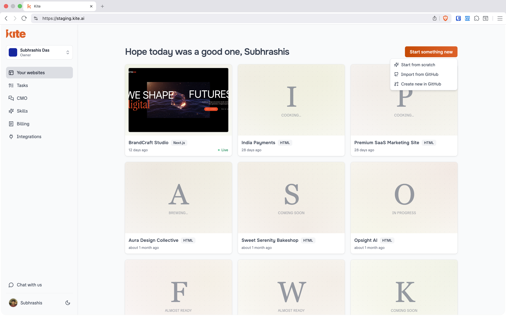
Describe the website in plain language and Kite builds it from nothing. No repository, no GitHub account, no setup.
No GitHub neededPick a repository the Kite GitHub App can access and Kite imports its code into a new website. The path this page documents end-to-end.
Requires GitHub AppKite creates a fresh GitHub repository and a website linked to it, then generates the site afterwards — so it lives in the user's own GitHub from day one.
Requires GitHub AppBoth GitHub paths start the same way — they need the Kite GitHub App to have access. If it doesn't, each modal routes the user straight to Configure GitHub App.
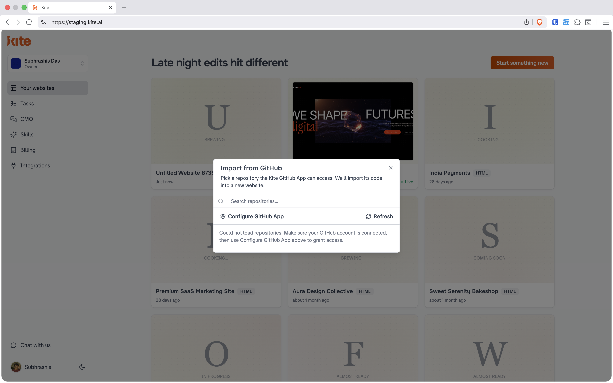
“Pick a repository the Kite GitHub App can access. We'll import its code into a new website.” The user searches their repos and selects one.
When no repos load, Kite is explicit about why: “Make sure your GitHub account is connected, then use Configure GitHub App to grant access.” Access is never assumed — it's requested.
“We'll create a new GitHub repository and a website linked to it. You can generate the site afterwards.”
The user names the repo — e.g. my-website — and Kite provisions both the repository and the linked Kite app in one step. The same Configure GitHub App affordance sits inline for users who haven't connected yet.
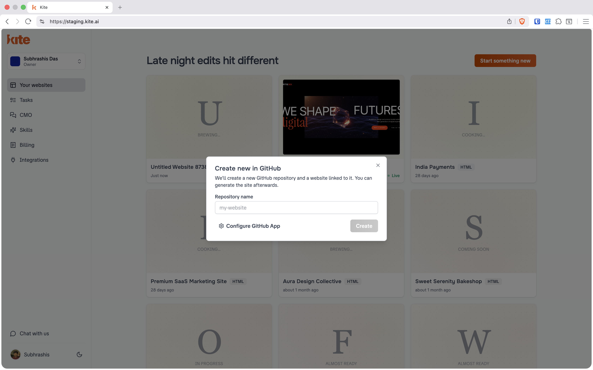
This is the real sequence a user walks through when importing an existing repo from inside an app. Connect → resolve → confirm → import → configure → sync. Click any screen to enlarge.
The user doesn't have to leave the conversation. Typing import from test_1 kicks off the import. Kite checks the path immediately — but it can't pull code it isn't allowed to see yet.
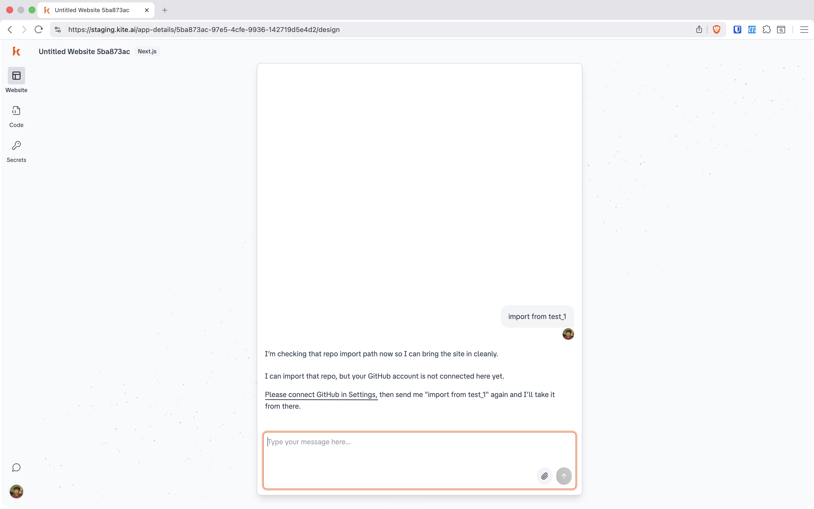
On the Integrations page, GitHub sits at the top of the catalogue — “Connect your GitHub account for repository access.” One click on Connect starts the GitHub App install.
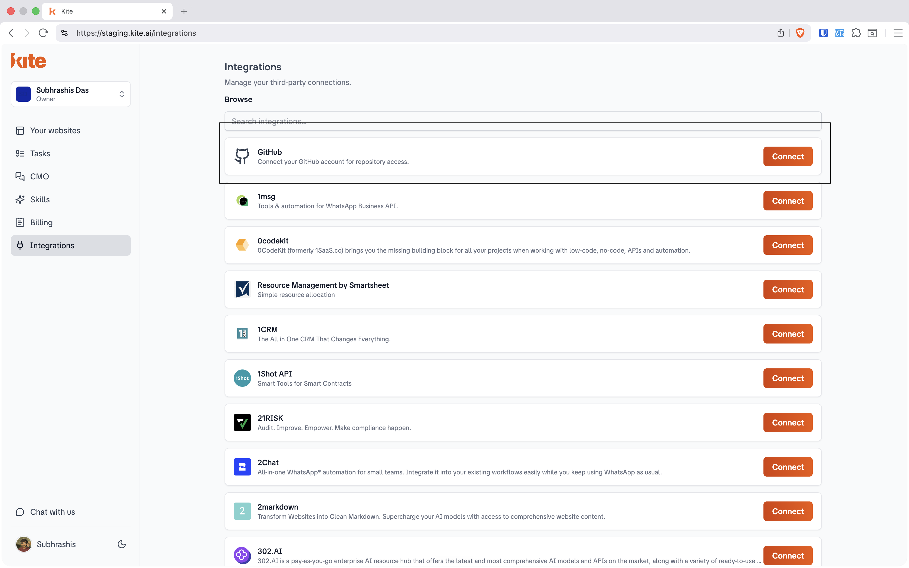
The user is handed off to GitHub to install Kite Github App on their organization (here, Appsmith). They choose All repositories or Only select repositories — access is theirs to scope, repo by repo if they want.
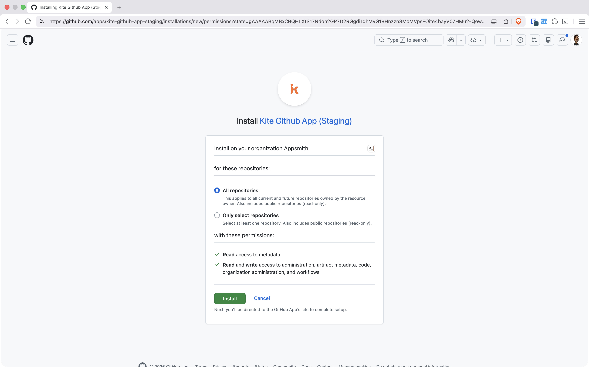
Back in Kite, GitHub now reads “Connected as appsmithorg” with a Disconnect control. The credential the user gave Kite is the GitHub App installation itself — scoped, revocable, and visible at any time.
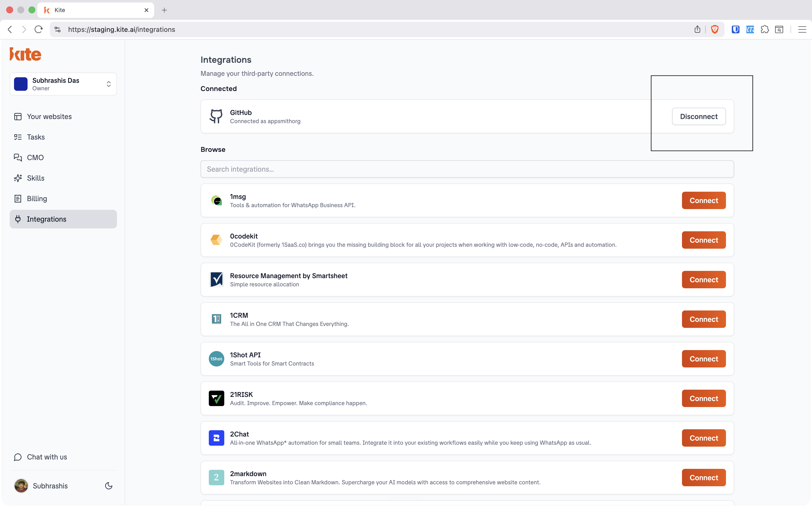
The user retries (“try now”). This time Kite automatically determines whether the repo exists and finds it: “I found one match: appsmithorg/test_1.” Because importing replaces the current site, Kite never does it silently — it presents an explicit confirmation with Yes, import it / No, keep current site.
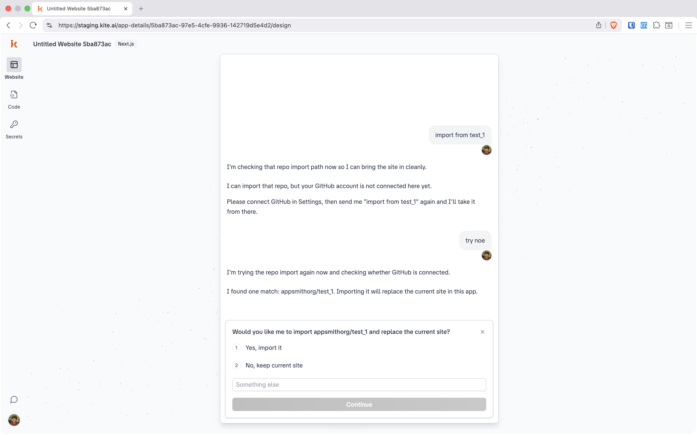
main — and flag what the repo needs to runOn confirmation, Kite imports appsmithorg/test_1 from the main branch and replaces the current site. It then reads the project and tells the user exactly what's missing before anything will work: one environment variable, NAME. The live preview begins loading in parallel.
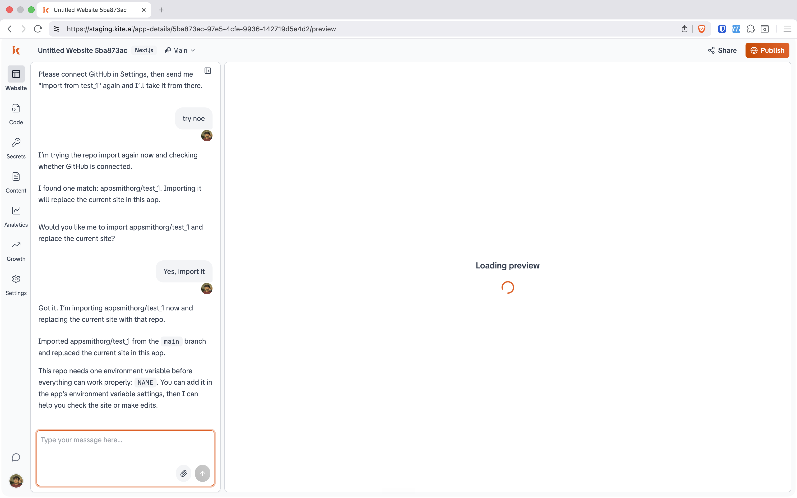
The required value lives in Kite's Secret vault — backed by backend/.env. The user adds NAME as a key, sets its value, and the imported site has what it needs to run. Secrets are masked, copyable, and deletable per row.
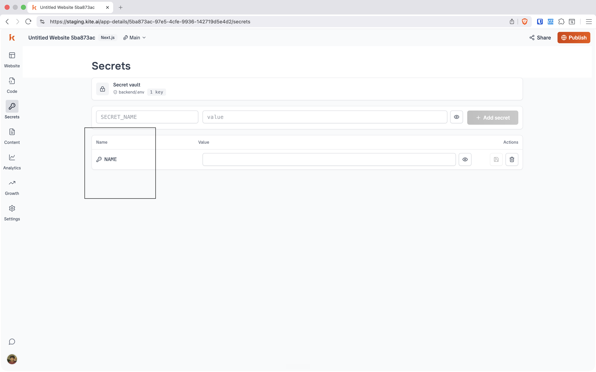
In Settings → Repository, the website is now bound to appsmithorg/test_1 on branch main. From here the link is fully two-way: Sync to GitHub pushes Kite's edits out as commits, Pull brings GitHub changes back in, and Change repository / Disconnect keep the user in control.
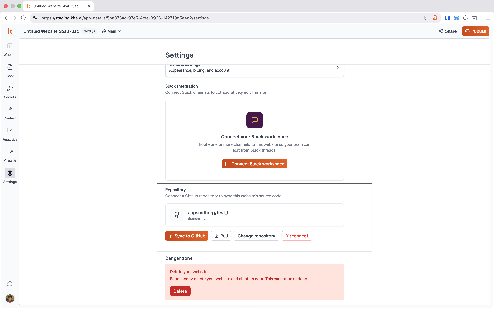
The import path is deliberately narrow. If the resolved repository isn't a Next.js project, Kite refuses the import outright and says so plainly — after confirming, but before touching the current site. No half-imported, broken state.
A user asks to import gallery. Kite first disambiguates the intent (“‘Import gallery' could mean a couple of different things, so I want to point us at the right door first”), then resolves the repo to appsmithorg/kite-gallery and confirms. On import, the stack check fails — and Kite stops, cleanly, without replacing the existing site.
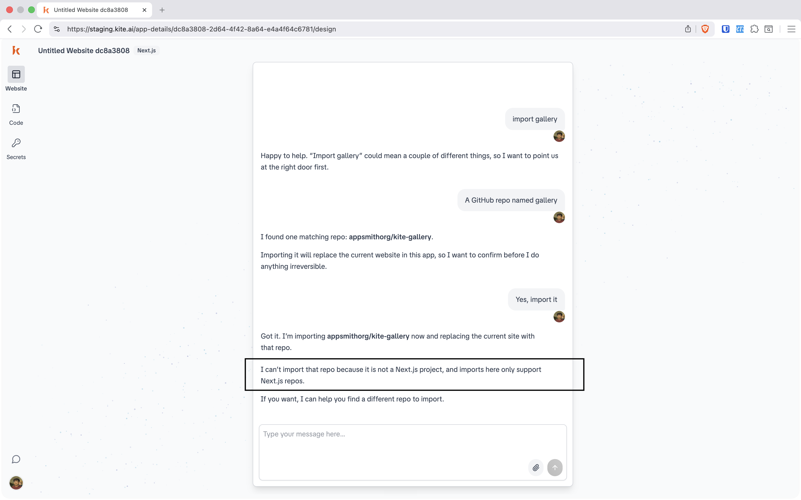
The same engine powers every entry door. What the user experiences as “it just worked” is really three behaviours stacked together.
No forms to hunt for. The user types import from test_1 and Kite drives the rest from inside the conversation — including telling them what's blocking it.
Real code needs the GitHub App connected and any required secrets (like NAME) supplied. Kite asks for exactly what it needs, when it needs it — never more.
Given a name, Kite determines whether the repo exists, reports the match (appsmithorg/test_1), and confirms before replacing anything irreversible.